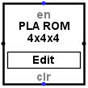
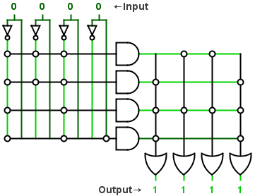

PLA ROM
PLA ROM
| Library: |
Memory |
| Introduced: |
2.8.5.0 (Fork) |
| Appearance: |
 |
| Edit Window appearance: |
 |
Behavior
The PLA ROM works as the original PLA ROM, each input bit has two wires, one connected normally
and the other connected to a not gate.
In the edit window you can connect clicking on the node each input wire to an and input wire or
with the and output wire and the or input wire.
The component will compute the value and return it to the output pin
Pins
- On west edge (input)
- The value of this input will have the bit width selected on the attribute "Number Of Inputs".
This value will change the output value depending of the connected nodes inside the component
- On east edge (output)
- Outputs the value computed by the component with the bitwidth selected on the attribute "Number Of Outputs".
- clr on south edge (input, bit width 1)
- If its value is True, it will deselect all the nodes inside the component
- en on north edge (input, bit width 1)
- If its value is False, it will disable the component
Attributes
- Number Of Inputs
- The bit width of the input pin.
- Number Of Internal And
- The number of and gates inside the component.
- Number Of Outputs
- The bit width of the output pin.
Poke Tool Behavior
Clicking on the "Edit" button on the component will show the edit window.
Text Tool Behavior
None.
Menu Tool Behavior
Clicking on the "Edit Contents..." button will show the edit window.
Back to Library Reference